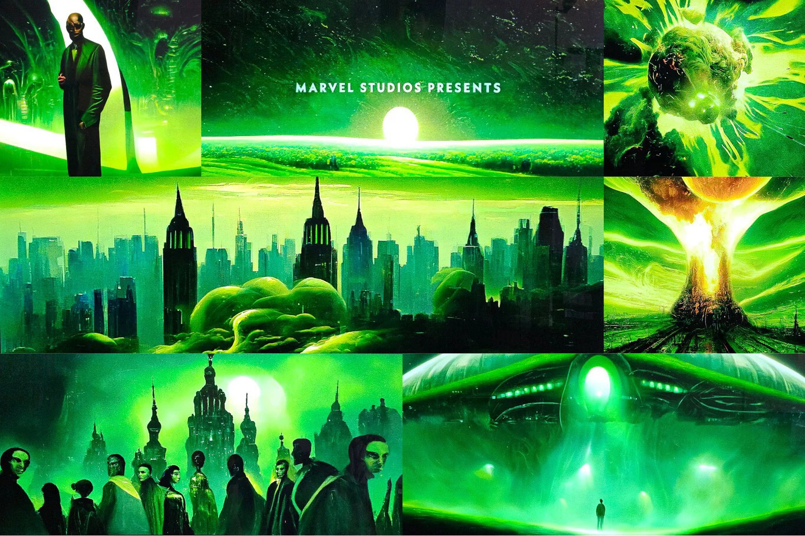

Ejemplos de Uso de IA en el Cine

Efectos Visuales
La inteligencia artificial (IA) se ha convertido en una herramienta fundamental en la producción de efectos visuales (VFX), ya que permite crear imágenes y entornos más realistas y convincentes.

Asistencia en Guiones
Algunas herramientas de IA ayudan a los guionistas a generar ideas, a estructurar sus esquemas, a revisar la gramática y a traducir textos.